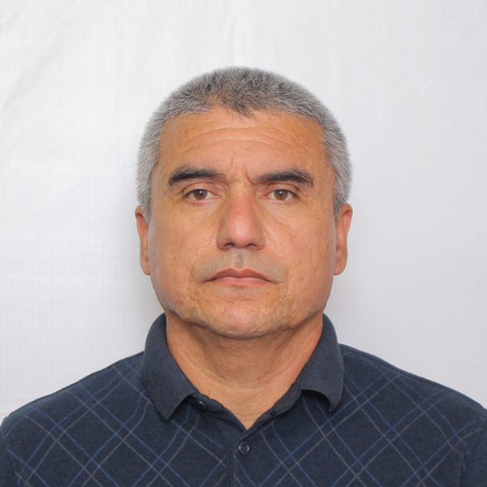

|  |
Мирзабеков ЖавлонРодился в г.Ташкент в 21 Марта, 1973 году |
| Компание | Должность | Год |
|---|---|---|
| Uzbekistan Airways | Инжинер механик | 1993 - 2016 |
| Gold star LLC | Водитель собственного грузовика | 2016 - 2019 |
| Город | Училище | Год |
|---|---|---|
| Москва, Россия | Авиационный Технический коллеж | 1990 - 1993 |
| Ташкент, Узбекистан | Ташкентский авиационный институт | 1994 - 1998 |
| Ташкент, Узбекистан | Бухгалтерские курсы - OBCO (не законченный) | 2020 - |
| Язык | Уровень |
|---|---|
| Родной язык - Узбекский | |
| Русский | С2 |
| Английсикй | B1 |
| Польский | А1 |